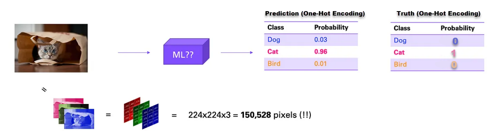
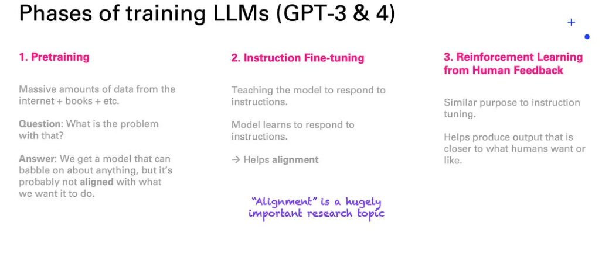

Generative AI and Large Language Models
Source
The presentation is based on the Article: How Large Language Models Work by Andreas Schoeffelbauer
What Will You Learn/Review
How a Large Language Model Works
How words can be embedded as vectors to code similar meanings.
How a LLM guesses the next word?
How fine tuning allos LLM to become “intelligent”
Examples of gen AI
How post-prepossessing can avoid discrimination, derogative language, and racism
Loading the Libraries and the Data
Large Language Models in Context
Source: Medium: https://medium.com/data-science-at-microsoft/how-large-language-models-work-91c362f5b78f
Image Recognition (Cat, Dog, Bird)
Size 224 x 224 and 3 colors = 150,528 Pixels
Source: Medium https://medium.com/data-science-at-microsoft/how-large-language-models-work-91c362f5b78f
First Image Recognition (Cat, Dog, Bird)
Size 224 x 224 and 3 colors = 150,528 Pixels
Neural Network: MLP with only twohidden layers (in reality: Convolutional NN)
Inputs: 150,528
Outputs: 3
Hidden Neurons: E.g. 150,528
Parameters: 150,528 *150,528+ 150,528+150,528 *150,528+ 150,528 + 150,5284 + 3=45,318,110,209
First Image Recognition (Cat, Dog, Bird)
Size 224 x 224 and 3 colors = 150,528 Pixels
Source: Mediumhttps://medium.com/data-science-at-microsoft/how-large-language-models-work-91c362f5b78f
Word Encoding for Sentiment Analysis
Source: Medium https://medium.com/data-science-at-microsoft/how-large-language-models-work-91c362f5b78f
Note, that similar words will have similar encoding vectors (similarity can be measured by Euclidean Distance)
(Large) Language Generation/ (L)LM
Source: Medium https://medium.com/data-science-at-microsoft/how-large-language-models-work-91c362f5b78f
Hurrah, our Neural Network can speak. Except it babbles :)
Generative Pre-Trained Transformer (e.g., ChatGPT)
Source: Medium https://medium.com/data-science-at-microsoft/how-large-language-models-work-91c362f5b78f
Still: A babbling machine
Alignment and Reinforcement Learning
Source: Medium https://medium.com/data-science-at-microsoft/how-large-language-models-work-91c362f5b78f
Truthfulness
Source: Medium https://medium.com/data-science-at-microsoft/how-large-language-models-work-91c362f5b78f
Prompt Engineering (Example Search Engine)

Source: Medium https://medium.com/data-science-at-microsoft/how-large-language-models-work-91c362f5b78f
Prompt Engineering (Example: Gift Recommender)
Prompt Engineering (Example: Gift Recommender)
$prompt = " Find a birthday gift that cost between $budget_min dollars and $budget_max for a $sex person who is $age years old. The person's hobbies are $hobbies. Sport is $sport_scale. $sport Movies are $movie_genre_scale. $movie_genre Books are $author_scale. $author Food is $food_scale. $food ";Prompt Engineering (Example: AI Book Marketing)
Prompt Engineering (Example: AI Book Marketing)
Proceed step by step:
First, answer the following question: <{question}>?
Second step: report in which section of Machine Learning with R. Tutorials and Case Studies by Carsten Lange is this topic covered?
**************
To find the section in the book that coveres the question use the following information from the book Machine Learning with R. Tutorials and Case Studies by Carsten Lange:
Carsten Lange is an economics professor at Cal Poly Pomona with a keen interest in making data science and machine learning more accessible. He has authored multiple refereed articles and four books, including his 2004 book on applying neural networks for economics. Carsten is passionate about teaching machine learning and artificial intelligence with a focus on practical applications and hands-on learning.
Max Lange, tirelessly wrote Python programs for the book Machine Learning with R and designed the website. These Python programs automated many tasks of the interactive and the digital resource sections, which made it possible to integrate these sections seamlessly into the book.
Chapter 1 Section 1.0:
With rapid advancements in recent years, machine learning and artificial intelligence (AI) have become increasingly relevant and have already started transforming many businesses. Knowledge about machine learning and AI is critical not just for STEM (science, technology, engineering, and mathematics) majors but also in many other fields, including business, economics, and other social science majors.
To better prepare students for a future with AI, Machine Learning with R by Carsten Lange introduces and applies fundamental machine learning principles. The goal of Machine Learning with R is to combine theoretical concepts with hands-on projects to equip the students with the skills to solve real-world problems. Recognizing that there is a need for a machine learning textbook that implements a hands-on approach, where students can interactively work step-by-step, and that introduces the quantitative concepts in a less mathematical way gave the idea to write the book Machine Learning with R.
This book introduces machine learning algorithms and explains the underlying concepts without using higher mathematics concepts like matrix algebra or calculus. Each chapter provides examples, case studies, and interactive tutorials. The examples and hands-on tutorials use the statistical programming language R, which is widely used for statistical analysis and data science. R has a relatively simple syntax. R is easy to learn easy for beginners, making R a good choice for teaching machine learning. No prior programming skills are required to work with the book Machine Learning with R. Tutorials and Case Studies by Carsten Lange. A designated R chapter introduces the R skills needed for the course. In addition, each chapter offers one or more interactive R tutorials. Students can work with real-world data and use the interactive environment to learn and experiment with R code in a web browser.
In Chapter 2: Introduction to Machine Learning, you will learn:
- Section 2.2 shows the difference between Machine Learning vs. Artificial Intelligence vs.Deep Learning.
- Section 2.3 categorizes machine learning tasks into regression, classification, and clustering algorithms.
- Section 2.4 covers using important terminology correctly.
In Chapter 3: R and RStudio, you will learn:
- Section 3.2 covers installing R and RStudio.
- Section 3.3 explains the standard window layout in RStudio.
- Section 3.3 shows setting up RStudio.
- Section 3.3 shows creating a project in R.
- Section 3.3 explains the major functionalities of RStudio.
- Section 3.4 explains extending R functionality with R packages.
- Section 3.5 shows how R stores different data types.
- Section 3.6 suggests a systematic to name R variables and objects.
- Section 3.7 shows how R displays very big and very small numerical values.
- Section 3.8 shows the structure of R commands.
- Section 3.9 introduces the tidymodels package.
- Section 3.9 explains data processing using the tidyverse package.
- Section 3.9 explains machine learning analysis using the tidyverse package.
- Section 3.10 uses a small machine learning project to analyze the Titanic disaster.
- Section 3.11 provides short, interactive exercises to learn R.
In Chapter 4: k-Nearest Neighbors, you will learn:
- Section 4.3 covers splitting your observations into training and testing data and why this is essential The details will be covered in Chapter 6.
- Section 4.5 covers the underlying idea of k-Nearest Neighbors.
- Section covers how similarity can be measured with Euclidean Distance.
- Section 4.6 covers scaling predictor variables and the reason scaling is essential for some machine learning models.
- Section 4.7.1 covers the tidymodels package to work with machine learning models.
- Section 4.7.1 covers defining a recipe to pre-process data with the tidymodels package.
- Section 4.7.1 covers defining a model design with the tidymodels package.
- Section 4.7.1 covers creating a machine learning workflow with the tidymodels package.
- Section 4.8 covers confusion matrix.
- Section 4.8 covers metrics derived from a confusion matrix to evaluate prediction quality.
- Section 4.8 covers the reason to be careful when interpreting accuracy when working with unbalanced observations.
- Section 4.10 covers the process of a machine learning model processing images.
- Section 4.10 covers how OCR works ## What is a recipe and where is it covered in Machine Learning with R?
In Chapter 5: Linear Regression - Key Machine Learning Concepts, you will learn:
- Section 5.3 covers the basic concepts of linear regression.
- Section 5.3 shows how machine learning model calibrates and optimizes parameters to improve predictive quality.
- Section 5.4.2 shows calculating optimal regression parameters using OLS (Ordinary Least Square Regression).
- Section 5.4.2 distinguishes between unfitted and fitted machine learning models.
- Section 5.4.3.1 uses a trial-and-error algorithm called Grid Search to find optimal OLS (Ordinary Least Square) Regression regression parameters.
- Section 5.4.3.2 uses a trial-and-error Optimizer algorithm to find optimal OLS (Ordinary Least Square) Regression parameters.
- Section 5.4.2 uses the R tidymodels package to process data with recipes.
- Section 5.4.2 uses the R tidymodels package to create a model design for OLS (Ordinary Least Square) Regression.
- Section 5.4.2 uses the R tidymodels package to add a recipe and a model design to a workflow and to optimize/calibrate the parameters.
- Section 5.5 shows how to transform categorical data into numerical dummy variables or one-hot encoded variables. Examples include: Titanic passengers (died/survived) or the waterfront location of a house.
- Section 5.5 distinguishes between dummy encoding and one-hot encoding.
In Chapter 6: Polynomial Regression - Overfitting and Tuning Explained, you will learn:
- Section 6.3 identifies under which circumstances overfitting occurs (see ).
- Section 6.4 uses a Polynomial Regression Model to predict house prices.
- Section 6.4 uses a Polynomial Regression Model to explain overfitting in detail.
- Section 6.5 shows how overfitting can compromise the prediction quality for new data.
- Section 6.5 explains hyper-parameter tuning to avoid overfitting.
- Section 6.5 provides a 10-Step Tuning Template for R to tune hyper-parameters for various types of machine learning models.
- Section 6.7 show how to use the 10-Step Tuning Template for R to work with a real-world dataset to tune a k-Nearest Neighbors model.
In Chapter 7: Ridge, Lasso, and Elastic Net - Regularization Explained, you will learn:
- Section 7.4 covers the basic idea behind regularization.
- Section 7.4 shows the difference between the penalty terms for Lasso regression models and Ridge regression models.
- Section 7.4.1 explains how the target function for Lasso regularized regression models differs from the MSE function of an unregularized model.
- Section 7.4.1 shows how to create a workflow for a Lasso regularized regression using the R tidymodels framework.
- Section 7.4.1 covers how Lasso regularized parameter estimates are affected by the value of the Lasso penalty hyper-parameter.
- Section 7.4.2 explains how the target function for Ridge regularized regression model differs from the MSE function of an unregularized model.
- Section 7.4.2 shows how to create a workflow for a Ridge regularized model using the R tidymodels framework.
- Section 7.4.2 covers how Ridge regularized parameter estimates are affected by the value of the Ridge penalty hyper-parameter.
- Section 7.5.3 explains how Elastic-Net regularization combines elements of both Lasso and Ridge to create a more flexible regularization function.
- Section 7.5.3 shows how to create a workflow for a Elastic-Net regularized model using the R tidymodels framework.
- Section 7.5.4 covers how to tune Elastic-Net hyper-parameters and how to measure the final predictive performance.
In Chapter 8: Logistic Regression - Handling Imbalanced Data, you will learn:
- Section 8.3 explains the basic ideas behind Logistic Regression.
- Section 8.3 shows why Logistic Regression is better suited than OLS for predicting categorical variables.
- Section 8.3 covers how to distinguish between probabilities and odds.
- Section 8.3 explains how to convert probabilities to odds.
- Section 8.3 shows how you can transform the Logistic Regression equation into a form that is similar to the linear OLS regression equation.
- Section 8.3 shows how you can use the transformed equation to interpret a Logistic Regression’s model-parameters.
- Section 8.4 covers how to create a tidymodels workflow for Logistic Regression to analyze churn at the TELCO telecommunications company.
- Section 8.4 covers how to identify problems related to imbalanced data — unequal distribution of the binary classification variable.
- Section 8.5 shows how to troubleshoot an imbalanced Logistic Regression, when predictive quality varies dramatically between sensitivity and specificity49.
- Section 8.5 shows how to use downsampling and upsampling to adjust an imbalanced dataset.
In Chapter 9: Deep Learning - MLP Neural Networks Explained, you will learn:
- Section 9.4.1 shows how to work with a graphical representation of a Neural Network.
- Section 9.4.2 covers how to transform the graphical representation into a Neural Network prediction function.
- Section 9.4.4 explains how to use an Optimizer in a Neural Network to change the parameters of a network to step-wise improve the approximation quality
- Section 9.4.4 explains the basic idea of Steepest Gradient Decent Algorithm or Back Propagation Algorithm.
- Section 9.5 explains why Neural Networks have outstanding approximation qualities that allow them to approximate any continuous function with any degree of accuracy.
- Section 9.5 covers how and why the outstanding approximation quality of Neural Networks makes them prone to overfitting.
- Section 9.5 shows how to work with the R nnet package to design and execute and run a Neural Network.
- Section 9.7 shows how to work with Pytorch from the R brulee package to design and execute and run a Neural Network.
- Section 9.6 covers why a Neural Network with ReLU (Rectified Linear Unit) activation functions has the same outstanding approximation properties as a Neural Network with classic Sigmoid activation functions.
- Section 9.6 explains why ReLU (Rectified Linear Unit) functions mitigate the possible inability of the Optimizer to change the values for the parameters of the Neural Net (Vanishing Gradient problem).
- Section 9.7 shows how to use PyTorch in an interactive project to estimate the prices of more than 50,000 diamonds based on four common predictors used in the appraisal industry (Carat, Clarity, Cut, and Color).
In Chapter 10: Tree-Based Models - Decision Trees, Random Forest, Boosting Trees (XGBoost) - you will learn:
- Section 10.3.1 shows how you can guide an observation through a Decision Tree.
- Section 10.3.1 covers how to use decision rules when observations are guided through a Decision Tree.
- Section 10.3.1 explains how you can use a training dataset to train a Decision Tree.
- Section 10.3.1 shows how to use a trained Decision Tree to make predictions for new observations.
- Section 10.3.1 explains how to interpret the structure of a trained Decision Tree to gain insight into the underlying causality implications.
- Section 10.3.2 shows how sensitive the structure of a Decision Tree can react to small changes in the data or the hyper-parameters.
- Section 10.4.1 explains how several Decision Trees can be combined into an ensemble model like a Random Forest.
- Section 10.4.1 shows how you can use the Subspace Method and Bagging to create slightly different Decision Trees for a Random Forest.
- Section 10.4.1 shows how you can use Bootstrapping to create multiple Bootstrap samples and Out of Bag samples from one training dataset.
- Section 10.4.2 explains how to use a Random Forest model to predict vaccination behavior for the continental U.S. counties.
- Section 10.5 shows how you can use Gradient Boosting to combine Decison Trees into an ensemble where each Decision Tree adjusts for the errors of the previous Decision Tree.
- Section 10.5.2 shows how you use an interactive project to predict vaccination behavior with the **XGBoost algorithm for the continental U.S. counties.
In Chapter 11: Interpretation of Machine Learning Results, you will learn:
- Section 11.3 explains how machine learning interpretation methodologies can be categorized into model-agnostic and model-specific methods.
- Section 11.3 covers how machine learning interpretation methodologies can be categorized into local methods (i.e., related to a specific observation) and global methods (i.e., related to the complete model).
- Section 11.5.1 shows how you can generate and interpret Ceteris Paribus Plots to analyze the impact of changing predictor variables related to a specific observation.
- Section 11.5.2 shows how you can generate and interpret Partial Dependence Plots to analyze the impact of changing predictor variables for a machine learning model.
- Section 11.6 shows how you can use Variable Importance Plots (VIP) to identify predictor variables that are more or less important for the prediction. The less important variables are potential candidates to be dropped from the analysis.
- Section 11.7 shows how you can use SHAP values to quantify the contribution of each predictor variable to the prediction of a specific observation of interest.
- Section 11.8 shows how you can use the Local Interpretable Model-agnostic Explanations (LIME) methodology to approximate a non-linear machine learning model with a linear OLS model. The latter can then be used to interpret the related impacts of the predictor variables.
Post Processing: Bias, Discrimination, Derogatory Language
Example: Pi chat bot